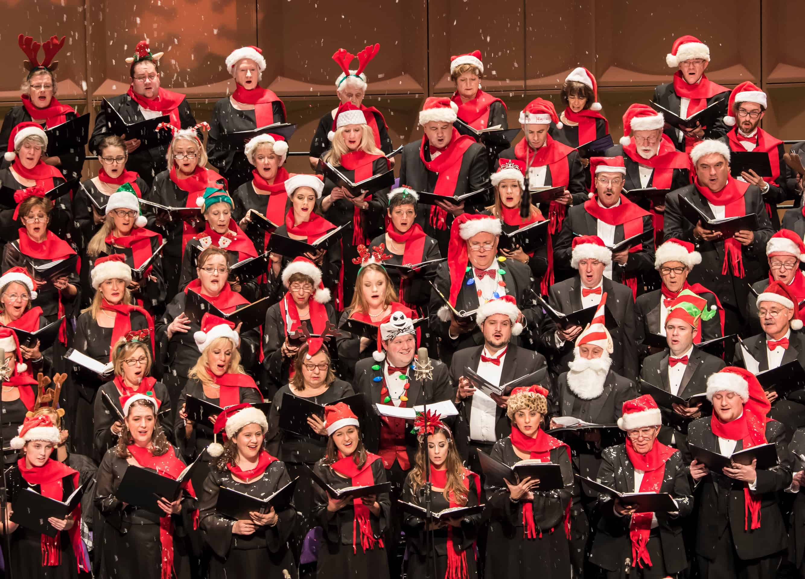
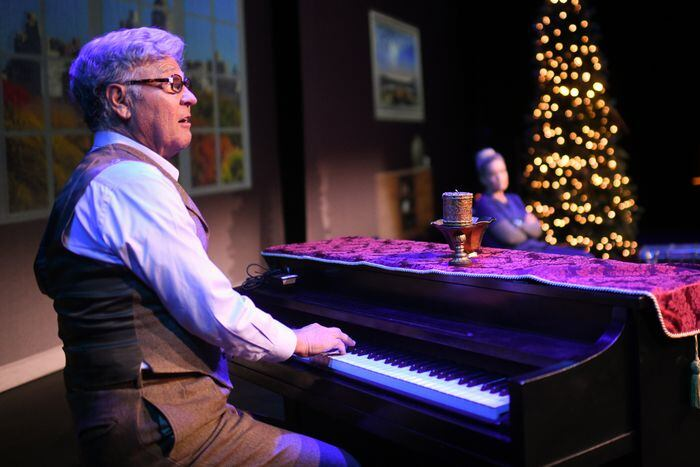

Check back daily for the most accurate and up-to-date information about events happening right now in the community!
November 15, 2023
The Rigby High School band is hosting their annual fall concert at 7:00pm in the Rigby High School auditorium. A total of five ensembles will be performing, including Varsity Jazz, JV Jazz, Percussion Ensemble, Concert Band, and Wind Ensemble. These students have been working very hard on their pieces and can't wait to show off everything that they have been preparing for! Can't make it in person? Click here to watch them play live on the Rigby High School Youtube channel.
November 25, 2023
The production of the Forgotten Carols Musical returns to Idaho Falls on November 25, 2023. The showing begins at 2:30pm and runs until 5pm. Another showing will begin later that night at 7:30. You certainly don't want to miss this beautiful Christmas story with original songs by none other than Michael McLean himself!
December 17, 2023
The community will be performing Handel's Messiah and is in need of participants! Practices are every Sunday in Ammon, ID, at 7:00pm. The performance will be on December 17, 2023. There are open spots for orchestra, band, and choir members who would love to participate in this wonderful tradition! You can buy tickets at the door or purchase them online here!